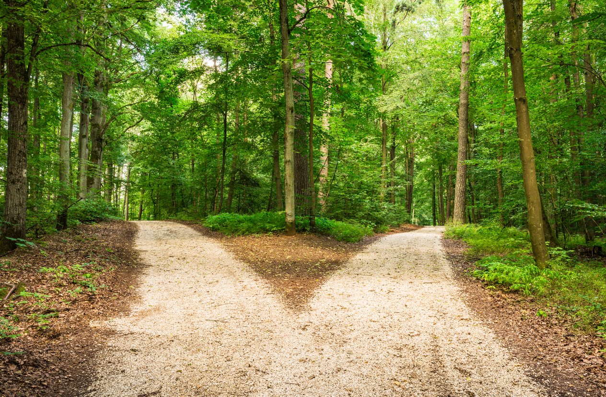
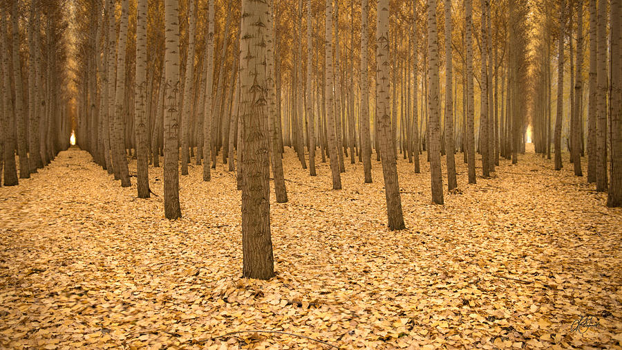
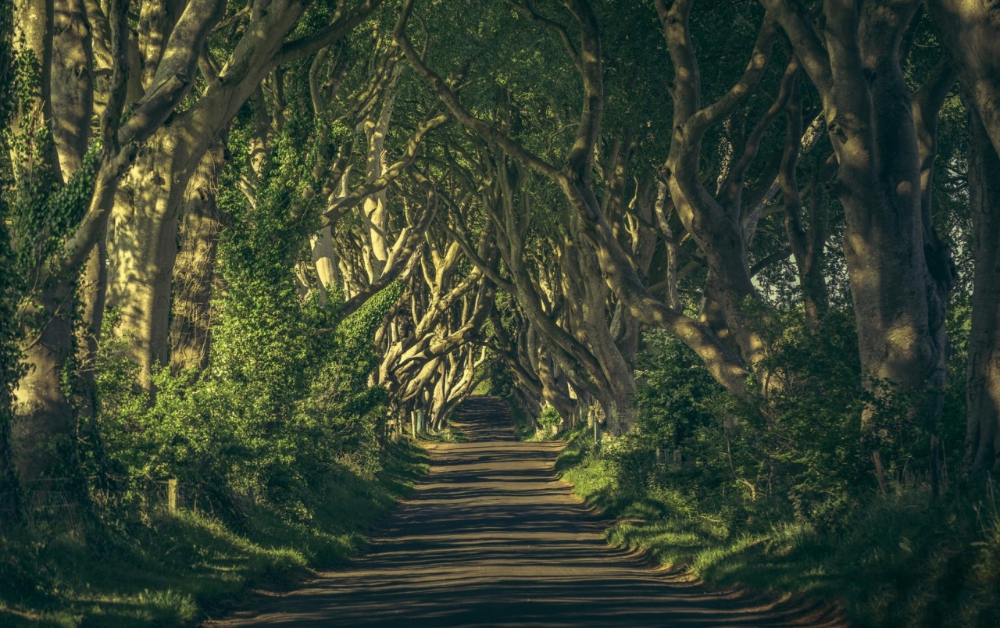

The Road Not Taken - Robert Frost
Two roads diverged in a yellow wood, And sorry I could not travel both And be one traveler, long I stood And looked down one as far as I could To where it bent in the undergrowth;
Then took the other, as just as fair, And having perhaps the better claim, Because it was grassy and wanted wear; Though as for that the passing there Had worn them really about the same,

And both that morning equally lay In leaves no step had trodden black. Oh, I kept the first for another day! Yet knowing how way leads on to way, I doubted if I should ever come back.
I shall be telling this with a sigh Somewhere ages and ages hence: Two roads diverged in a wood, and I— I took the one less traveled by, And that has made all the difference.
